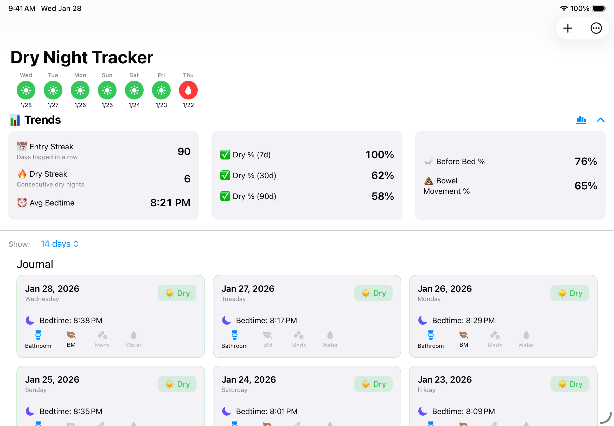
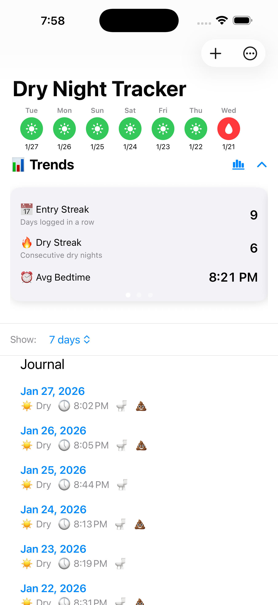
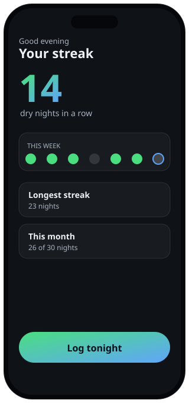
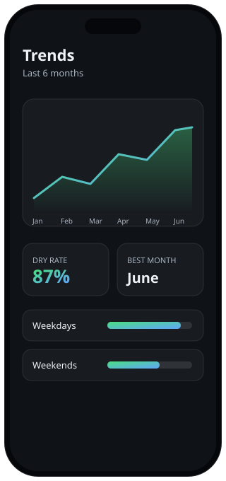
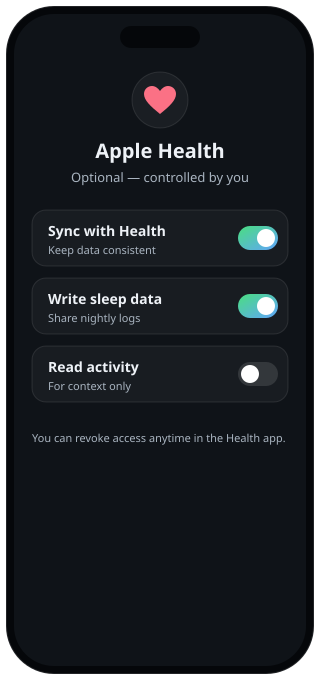
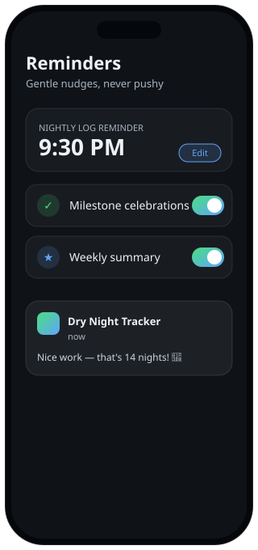
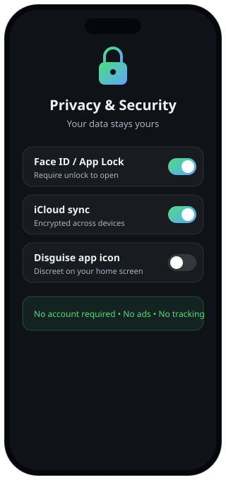

Daily logging
Log results in seconds and keep a clear record over time.
Dry Night Tracker is a simple, non-judgmental way to log nights, spot patterns, and see progress over time. Built for iPhone, iPad, and Mac.


Designed to be reassuring, easy to use, and respectful of sensitive information.
Log results in seconds and keep a clear record over time.
See patterns and progress with simple, readable visualizations.
Track routine factors to better understand what may help.
Optional reminders plus celebratory milestones to keep things encouraging.
Connect to Apple Health to keep data consistent across devices.
App Lock / Face ID, iCloud sync, and clear controls to keep your data secure.
A look at logging, trends, and the privacy controls.





Dry Night Tracker is built to be private and respectful.
Your entries stay under your control. App Lock / Face ID and iCloud sync are available for convenience and protection.
The app does not provide medical advice, diagnosis, or treatment.
Read the full privacy policy here: Privacy Policy
If you use Apple Health, access is optional and controlled by you.
The things people ask most before downloading.
Yes. There's no account to create, your entries are stored on your device, and nothing is sold or shared. The app shows no ads and does no third-party tracking.
Optionally. If you enable iCloud sync, your data is kept consistent across your iPhone, iPad, and Mac through your private iCloud account. You can leave it off to keep everything on a single device.
No. Apple Health is entirely optional and off until you turn it on. You choose exactly what is shared, and you can revoke access anytime in the Health app.
Yes. Face ID / App Lock can require authentication to open the app, and an optional disguised icon keeps it discreet on your home screen.
Dry Night Tracker is built for iPhone, iPad, and Mac.
No. The app is a private tracking tool and does not provide medical advice, diagnosis, or treatment. For health concerns, please consult a qualified professional.
Questions, feedback, or help with setup? Reach out any time.
Email: support@cheezydibblestudios.com
This email is monitored and used solely for app support and privacy-related inquiries.